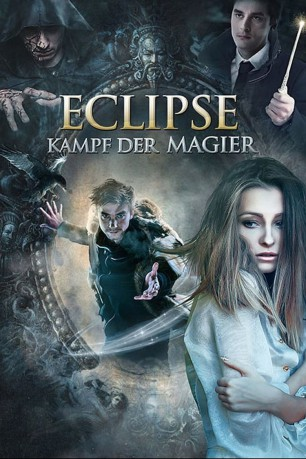

#9097 Eclipse - Kampf der Magier
Alternativ: Mystic Game (Englischer Titel)
 
 IMDB-Wertung: 5.6 / 10
IMDB-Wertung: 5.6 / 10  Metascore: 0
Metascore: 0 
Es könnte keinen schlechteren Zeitpunkt geben, an dem sich Aleks und Tanja zum ersten Mal treffen. Ausgerechnet jetzt treten zwei der größten Magier zu einem gefährlichen Kampf gegeneinander an und kommen dabei dem jungen Pärchen in die Quere. Denn plötzlich scheint es, als habe eine böse Macht Besitz von Tanja ergriffen. Um Tanjas Leben und ihre Liebe zueinander zu retten, taucht Aleks in eine magische, ihm völlig fremde Welt ein. Nur wenn er sich dem Spiel der großen Magier stellt, kann es ihm am Ende gelingen, Tanja von dem Fluch zu befreien ...
Jahr: 2016
Dauer: 83 Minuten
FSK: 12
Land: Russland Studio: Sunfilm EntertainmentTonspuren:
Untertitel: Deutsch,
Auflösung: 1080p (1920x800) Größe: 5212 MB
Genre: Abenteuer, Fantasy
Regisseur: Artyom Aksenenko
Drehbuch: Brian Kehoe
Soundtrack:
Darsteller:
- Sergey Burunov als Dmitriy Grigorev, vedushchiy shou
 Alexander Petrov als Aleks
Alexander Petrov als Aleks- Veronika Vernadskaya als Inga
- Svetlana Golovina als Aglaya, znakharka
- Ekaterina Kabak als Kristina
- Kirill Kozakov als Shaman
- Semyon Lopatin als Rustam, magistr
- Andrey Perunov als Dekan
- Diana Pozharskaya als Tanya
- Yuliya Sules als Khozyayka rynka
- Aleksey Voronin als Semyon Budaragin
- Denis Yasik als Kan, master
Datei: X:\2016(A-F)\Eclipse - Kampf der Magier (2016, FSK12, 1920x800).mkv seit 19.07.2018
Festplatte: HD 2016(A-Z)
 Es gibt insgesamt 147 Filme in der Gruppe '2016(A-F)'
Es gibt insgesamt 147 Filme in der Gruppe '2016(A-F)'